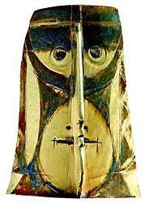
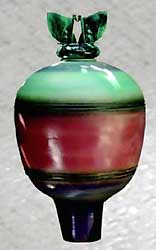
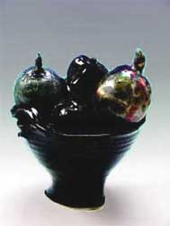
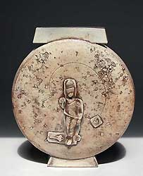
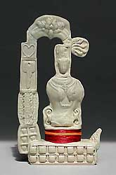
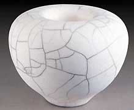
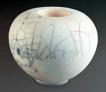

| Terra Natura
Art critic Uma Nair writes on the status of
contemporary Indian ceramics.

Art is as flighty as the weather. No sooner is an art movement
deemed passé than the new avant-garde picks it up. In India, specifically in the capital city of Delhi ceramic artists have slaved
for years, arduously seeking matter and materiality in the urban
chaos in which they live.
P. Daroz, Kristine Michael, Vineet Kacker, Manisha Bhattacharya and
Ela Mukherjee were specifically chosen by me for this debut of a
curatorial effort because I was exploring a synergy that would exhibit
not only the paths of progression but also the intrinsic diversity
in their ability to question and create within the expansion of
their own sensibility.
This was an invitation to Terra Natura, showcasing 5 ceramic artistes
together for the first time in terms of a show that seeks to unravel
distinctive idioms in the language of ceramics. One of the criticisms
about trends in Indian ceramics is that shows have presented Indian
ceramic artistes aping the West as well as South East Asia, this
show seeks to bring in indigenous Indian elements into the ceramic
form, as well as look for quaint and timeless probing in the world
of the inner and the outer contexts of ceramics.
In requesting the artists to create 7-10 works both in the large
as well as medium and small formats, I would like to state that
the quest in bringing five of them together was to look for a confluence
of opposite characteristics, iconic references and enchanting imagery.
My request then lay on the foundation of a tangential foray into
creativity so that the works signify their signature but also reflect
ingenuous inspiration. Hence the excitement of having a never seen
before postmodern fantasy that harks back to infinite elements from
Indian cultural associations was the silent quest of this curatorial
venture. While the market is important this show must be viewed
for its intensity of purpose and its strength of substance.
In India, a new generation of artists has emerged with the drive
to translate its venerable traditions into a contemporary language. These five ceramic artists have created for themselves a niche of
sorts, out of a desire to be different. Their work, sometimes on
the wheel, sometimes off it in a sculptural quest as evidenced in
the exhibition, seems to belie the ideological opposition between
craft and disposable culture. These ceramists embrace a consumable
culture with a differential attitude, recalling perhaps the human
response as well as history in evaluating and recasting it in ceramic
forms that forge not only a cohesive unity but also a wide diversity
of cultures from within and without.
Evocative epochs: P. Daroz
For
Daroz who travels all over the world , has 30 years of experience
behind him, and comes back with influences his works move from one
phase to another, from ancient cultures, to the creation of ceramic
objects that hold a peculiar prestige that culls the best of tradition
with the modernist gaze in terms of an erudite explanation. On a
visit to Egypt he said: I kept looking at the architectural forms
and I wanted to break the aesthetics of what I saw. ' The extant
paintings from ancient Greece, that adorned the ceramic vessels
got recessed in his inner psyche.
Daroz exemplifies that entendre as he brings to his works a historic
amalgam with the flashback to symbolism and the contemporary trends
in glazing and the language of forms. 'The Chinese warriors that
he saw at China became the heads of his urn like Aladdin jars that
grew in bulbous magnificence. 'I used the tops of the jars to create
the figures of the warriors heads, ' says he. I wanted to play with
the different architectural elements and it was such a feeling of
fragility and fascination combined to go back in time and play with
the different forms.
When objects are designed to be thrown away, there is little encouragement
to enjoy their material being. Ceramists like Daroz press the pause
button on tangential ability, enabling us to appreciate the subtle
forms of clay that get juxtaposed into the elements of historicity. Other than cast his forms, Daroz delicately gives us a porcelain
slip. The bisque firing burns away the cardboard and then the work
is fired again at a higher temperature. He renders his subject in
unique forms, sometimes in varied multiples like the two masked
faces. He assembles them into split-face like structures, reintroducing
the culture of handwork and the equivocal tenor of tonality. The
masked face here in porcelain when lit up harks back to yesteryear. It
was a work like this which Daroz recently took for the Beijing Biennale. The porcelain face of the Chinese image is intrinsically a flashback
to the past for Daroz, who has always been fascinated by history
and culture.
"I
was amazed at the harmony, the sense of proportion that the Chinese
civilisation had so many hundreds of years ago, " Daroz said.
After his trip to China, he embarked on a series of warrior heads
that he used as lids for his huge Aladdin-like urns that he glazed
in splendid tones of barium sulphate.
"The soldiers in terracotta were so fascinating, I thought
about them for days. The faces that I created, even the warrior
heads have a definite spirituality about them and a vibrancy that
holds them in a timeframe, " he said.
Known for his precision and perfection with glazes, Daroz has worked
arduously for 30 years on different forms - both sculptural as well
as huge urns and murals. His creations grace numerous corporate
foyers and hotels all over the country.
"Using the timeframe to give a sense of history, bringing
it back and forth, has always been an important part of my creation. In my work you will see that I have tried to frame fragility and
the potency of power, " he said.
In the four platter like circular creations, he stencils them with
edgy dynamics about delineations in history, far from the noble
sentiments espoused by his bearded forebears in the masks. Despite
the immediacy of his materials, Daroz's works are the product of
painstaking processes of translating the incidental and perfectionist
tenor of glazes, the ceramist in him labours intensively to render
the 'raw' feel of his understanding of graphics. The use of ceramics
as a medium to convey ideas normally seen in images from antiquity
gives his work added weight. They add the substance of honesty to
what otherwise might seem personal indulgence.
Charismatic Cornucopia: Kristine Michael
The
writer, author, teacher and sculptress in the art of ceramics, Kristine
Michael has at least two decades of empowered works behind her.
In this exhibition she wants and claims to be a potter having continuously
privileged the clay material and wanting to maintain a relationship
with the vital and integral power of the form. She calls a number
of her works 'Cornucopia'.
The series of ceramic works titled 'Cornucopia' emerge out of an
earlier engagement with the nurturing aspect of life and nature
as she unravels a series, which composed of groups of chrome red
and yellow pears and capsicum on striped black and white ceramic
pillows. 'My work has moved from the single object in a series to
multiple similar objects in an organized placement that has meaning
when viewed as a whole. The relations between objects in a space
fascinate me, and they then move beyond being mere copies or representations
of the natural object'says Kristine. ' Twenty years ago, inspired
by the sea and spirals in natural organic forms, I started making
shells and small sea creatures. Increasing versatility with the
ceramic medium and its vagaries of clay, surface finishes and kilns
allowed me to expand the way these objects were made ? through raku, pit firing, salt glazed stoneware, wood fired stoneware, porcelain, coloured clay, maijolica and luster. '
However, she has become more and more involved as a ceramic sculptor
in the materials, growing distant from the initial form of the daily-use
object. Kristine entertains a body-to- body relationship with clay;
she kneads it, mixes it, folding it intensely again and again in
order to capture individual forms, like her 'Lidded vessels' and
'Lidded Fruits'
That play with her intense preoccupation with nature's elements
giving us the symbolic sensation of born from the earth. 'Throughout
this creative journey, I have maintained a dialogue with my inner
self, trying to make sense of life through my art, translating haunting
human experiences like a fractured search for meaningful construction
with nature's sensory and sensual evidence around me' she adds.
'The word 'cornucopia' is the end of the horn of plenty ? life's
cache which opens into a harvest' she elaborates. 'Today's world
has the crass and vulgar along with simplicity and beauty, tawdry
glitter lives alongside true gold'. . These forms do not come without
fights, twists, conflicts, and even some resistance exerted by the
artist against herself and against the material in his quest for
unknown territories. Her aim, indeed, is to give birth to forms
elaborated on bases, always renewed, and yet, paradoxically, relatively
constant. Hence, the name we give them: magnificent matrices from
nature. They mainly include fruits and vessels and are put into
shape and realized in successive series
These forms retain the imprint of the folding, torsion and violence
exerted, producing embossing, tearing, cracks, grooves and furrows, which contribute to the structure and the texture of the surface. The artist refuses the abstraction of a structure which would evoke
the informal or the anti-form as a result of a simple game or in
randomly accumulating or piling up matter.
Preferring the relative objectivity of the link with her initial
form, her aim is definitely not to produce variations of a known
object but to start her creative process from a guiding line in
order to look for a form possessing a framework which will become
singular. Hence, the name 'form-objects' we give to these creations.
Capturing Contemplation: Vineet Kacker
Vineet
Kacker took Delhi by storm when he held a show that were a series
of caskets a few years ago. The contemplative idiom and the freezing
of the ritual in the ceramic medium is what remained in one's inner
recesses. These works started acquiring further freedom and expressive
strength when the artist devised a double-casing technique; he has
gradually moved sideways, both at the form level and in his way
of leaving the imprint of his hands on the material. In his many
sojourns over the monasteries in the North he began creating works
that were both monumental in tone as well as smaller elements of
play. From Sutra Stones, to Totem Poles to Hanuman Remix Vases his
idiom transcended the mundane to capture contemplative moorings
within and without.
'The Sutra stones are inspired by the carved Buddhist Mani stones
found in the Himalayas' says Vineet. ' The colours denote the elements-red
for fire, ochre for earth, blue for water. The stones, 21"
across, are also meant to be actual seats to sit on (and meditate). I like the fact that for most people there is a tension created
by the act of putting sacred mantras where one would rest one's
behind!' he says in humour. ' The glazes are mostly dry and earthy
yet colorful. '
'The
Spirit Totem is inspired by wayside shrines' he explains. They become
a series of small quaint structures that get dramatic because of
the threads he twines around them. Perhaps somewhat intriguing is
the way he uses the celadon surfacing to give us another feel of
the days of yore. ' I make several smallclay elements from stamps
and molds, and then collage them together, reflecting in a sense
the incremental way in which street shrines evolve. ' he says. '
The icons themselves are composite ones, the body of one matched
with the head of another. I like the idea of using oriental celadon
type glazes with very Indian imagery, highlighted with the wrapping
of ceremonial Tibetan colored thread. '
Then he gives us two marvelously mesmeric Hanuman Remix Vases that
have juxtaposed images on them that speak evocatively of the intense
magic of imagery in the ritual iota of memory. ' The Hanuman Remix
Vase as the name suggests uses a composite Hanuman head on a Buddha
body- an irreverent take combining two symbols that stand for love(hanuman)
and compassion(Buddha)'says Vineet.
All his pieces are in Stoneware, fired to cone 10 (1300 degrees
centigrade) in a gas fired kiln. They made using all different techniques
- wheel throwing, hand-building, coiling and molds.
Zen Strands: Manisha Bhattacharya
The dynamics emerging from Manisha's raku works evokes what Deleuze
has called "a muscular conception of the material which generates
springs everywhere"; indeed, we gradually feel a greater sensitivity
to the quiet energy spread by Manisha up to the point it triggers
the feeling we open to a breach in the opaqueness of appearances;
she leaves the imprint of the vibration of the muscle torturing
the material, and of the gesture involving the whole body while
applying the glaze and then peeling it off. This energy infused
in matter is so present that we can qualify it as organic reflection
of the crackle.

'These are Raku fired' says Manisha. 'I first burnish my forms &
then get them bisqued. Post bisque a peel-off glaze is applied &
Raku'd. . Post firing , the work is reduced . The smoke meanders through
the crackled glaze to form the carbon black lines on the pots. Smoke
lines can be random or premeditated. Post-reduction the glaze is
peeled off. the finished pots don't have a layer of glaze. Sometimes
I sand-blast the forms to create an interesting play of smooth &
granulated surface texture'
In the smallest pot in this show a raku fired tensile creation
by Manisha we can see the strands of texture that have blended into
the smoke. This work has a mystic quality about it. That sculptural
strength has also a relationship with flesh, with sensuality, as
it seems to spark off a form belonging to a space of desire; the
artist manages to convey some of the feelings she experiences while
decorating her works in the art of minimalism; in the second series
of black and white creations their imprints can be perceived in
the stripes and furrows preserved on the surface skin. Furthermore,
that plastic strength asserts itself in the force lines present
in the artist's structures; it results from an operative mode based
on the organization of the force lines that constitute the form-objects.
One can see a confrontation at work, a tension between horizontality
and verticality. . 'I know what attracts me to these forms but I
haven't really named the series' she explains. Basically I am working
on making the interior space as interactive as the exterior. These
forms welcome the viewer to look in & get sucked down the mysterious
alley into the enclosed space of these globulous forms.
Each piece in Manisha's hands possesses a predominantly horizontal
or vertical axis, and yet we can perceive a resistance of the opposite
axis in all of them. This work of transversality appears also in
the gestural result of the peeling off of the glaze on the surface. Lines, black flat tints, vertical or horizontal according to the
piece, run across or down it, but that dominance is always counterbalanced
by other lines and flat tints running in the opposite way, which
create an opposite tension; as well they contribute to the structure
of the tension inherent in the work. Finally, the singular colour
of the glaze provides a specific light which renders the space palpable. This light is present through the contrasts between the flat tints
of intense blacks, the background most often white with the different
variations of hues scattered over the surface. On one same structure, these contrasts produce blocks of colour-lights crossed by ridges
which, in turn, yield waves of light.
Inner Strengths: Ela Mukherjee
Think of works that bring back reflections of fables like 'The
shoemaker and the elves, ' Into the three lobed mahogany toned structures,
Ela embellishes a leafy twist that reflects the density of vision
in creation.
'For my works form plays the pivotal role. I largely do hand built
ceramics' says Ela. ' Even if I do wheel thrown forms, later I alter
them or add hand built forms to them. I usually work in series that
is I take up a simple form and explore it in various ways by altering
or adding other forms to each of them. It is the form, which decides
the use of colour. 'she adds. Her works have a plastic strength about
them.
This plastic strength generates a fermentation, a breathing such
as it seems to carry vibrations. Using Paul Klee's idea, what emerges
is "an in-between world where one doesn't talk and can't see, but where one works". Thus, the greater the dimensions of the
structures the artist confronts, such as those of the two lit works
, the more assertive that strength.
In addition, the artist has managed to produce a differentiating
operative function in each series created as well performing at
the levels both of form and of the glaze structuring the surface. She keeps managing to escape into diversions from known territories
in her quest for interactions of forms and minimal glaze surfaces. That differentiating operating function acts while maintaining a
coherence that allows the singular identity of the work to be recognized.
'I work in stoneware and fire my works in my gas kiln, says Ela. 'I primarily work with different coloured clay bodies, coloured
slips, engobes and pigments. The use of glaze is minimal in my works. If I use it, the glaze is usually matt. Mostly I leave a part of
a work unglazed, so the clay body and the matt glaze work in contrast. At times I also incorporate other materials like metal, textile
with ceramics. This time apart from using metal, I have also introduced
light as a part of my works'.
Ela successfully achieves those transgressions insofar as she
has imposed on herself constraints and lines of research, while
allowing a potential of randomness to take place in the effect of
fire over the tensions given to form, as well as over the practice
of glaze overlapping. Thereby Ela offers us the work of a sculptor
endowed with a singular sculptural strength and differentiating
operative functions.
Curator's conclusion:
All five ceramists entertain a body-to-body relationship with the
glazing process as well as well as the sculptural, their surges
contained in different symbolic vats, are applied with the hand
or a brush, and also thrown on the structure. This set of gestures
implies a dynamics involving the whole body and leaves its mark
on the surfaces to produce the effects expected. However, submitting
a piece of work to the fire introduces an uncertainty or random
factor that is included in the technique used, as revealed by the
overlapping of glazes which sometimes may not have been wanted,
and by the pouring and dripping of the glazes.
'The incidental nature of firing is exciting, ' says Daroz. Perhaps
after firing, the pieces take on varied hues, maybe a rather pale
hue, or a dark one or a smoked one, with variations on the surface
that stand out against backgrounds and are scattered with flat intense
blacks which contribute to its structures. That varied textural
terrain is what excites when the surface is covered with lines, marks or images that appear in the form of multiple strokes and
dots produced by the liquid dripping or by salt oxidation. It conveys
the feeling of the core of a mineral world, without yet vanishing.
Besides, following its evolution, this show Terra Natural appears
to be more and more animated by flows of energy and forces of differentiation.
Sure enough, the artists have acquired a heightened relationship
with their clay materials, a greater freedom in their practice of
glaze application, a more intense knowledge of the relationships
of forms and glazes with fire, but all this cannot entirely account
for that work's development. The concepts borrowed both from experience,
the sculptural strength, and from the loss of firings, the differentiating
operative functions, all shed insights on their works. The processing
forms together with the style of glazing seem indeed to have become
a forming strength endowed with several features.
The works in Terra Natura deliver visual excitement. Without the
bright colors the consumerist culture usually favours, they focus
on structure: line, shape and weight. Distinct rhythms emanate, as
varied as Vineet's Buddhist leanings to Ela's earthiness, and the
longer you look the more colour you see in the subtle gradations.
Terra Natura opens onto a serious range of metallic and non metallic
tints, many of which look like molten colour , or any number of
specially mixed alloys, as well as creamy , ivory tonalities. If Manisha
even gets black and white to function like colors, their matte surfaces
and unfathomable depths making them as mysterious as any of her
other indescribably sensual shades. (In art, black and white ordinarily
belong to drawing, which tends toward the clarity of rationality
rather than the intuitive ambiguity of color. )
Gestures celebrate Zen simplicity and colors melt into one another.
In some works, bare linen grounds evoke the gritty glee of Russian
Constructivism. The dim lit face of Daroz's porcelain makes man
look only more liquid and hallucinatory. Kristine has managed to
transform the cacophony of clashing colors, competing rhythms and
logical contradictions into a spunky symphony of visual pleasures
that are exponentially more idiosyncratic, freewheeling and fearless
than any one work's internal composition. Terra Natura becomes a
quiet celebration of the artistic quest that blends the dynamics
of minimalist moorings with the maximal energy of artistic intent.
More Articles |
{kind=link}
{kind=link}
{kind=link}
{kind=link}
{kind=link}
{kind=link}
{kind=link}